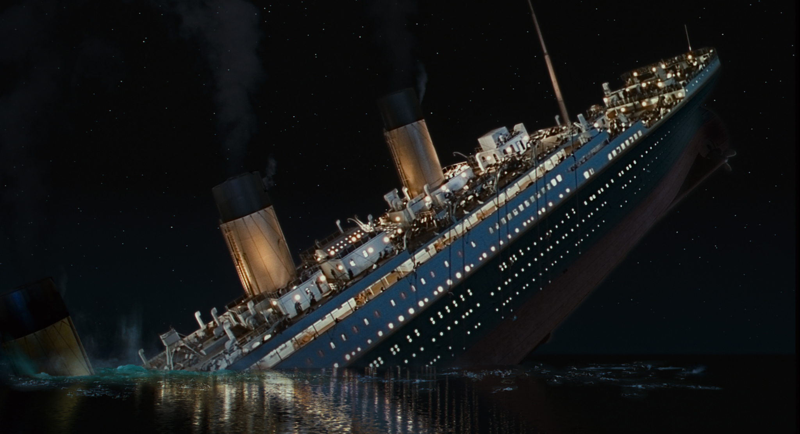
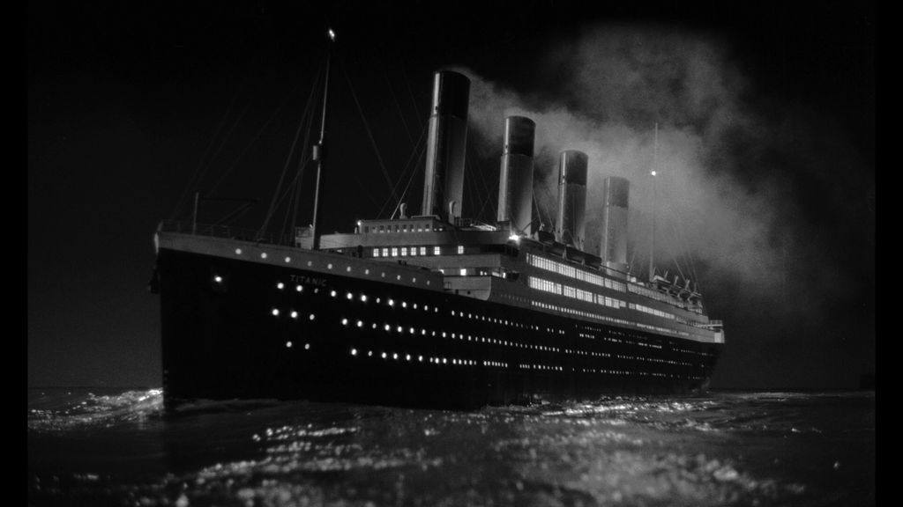
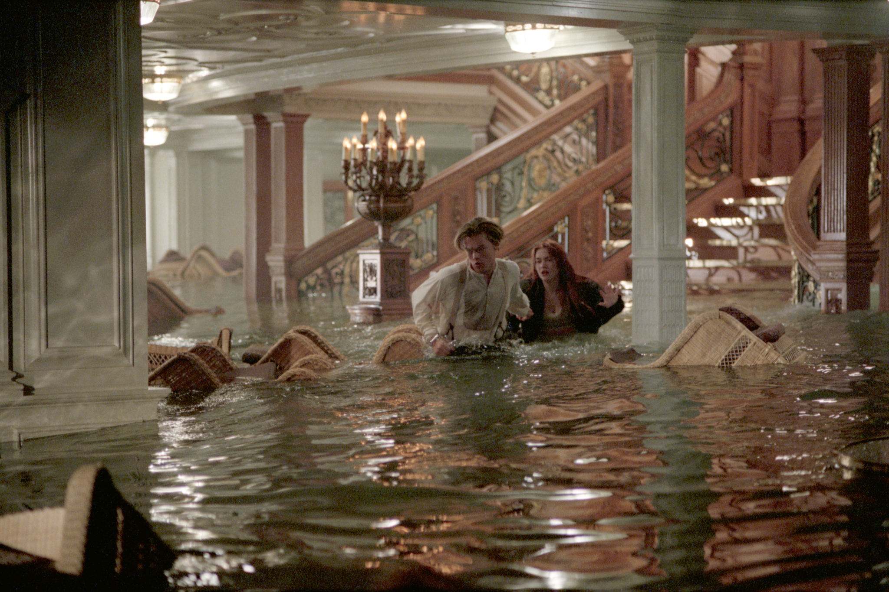
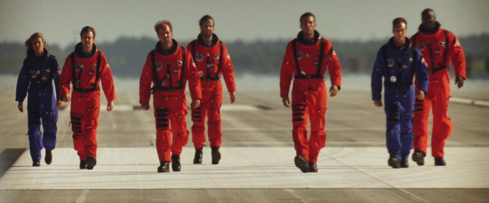

The 2024 box office has been a disaster, but the release of Twisters is making it a disaster in a good way. The loosely connected sequel to the 1996 tornado flick is the latest in a proud tradition of on-screen destruction. Cinematic versions of Earth have been ravaged by volcanoes, tsunamis, meteors, earthquakes, meltdowns, ice ages, pandemics, twisters, ancient Mayan prophecies, and more. Sometimes this destruction is harrowing; frequently it’s a popcorn-popping good time. Sometimes the movies border on being disasters themselves, but for every so-bad-it’s-good disaster movie there are also all-time greats. In every case, it’s a singular thrill to watch a disaster on a big screen and think, “I’m glad that’s not me.”
For such an essential part of blockbuster cinema, the definition of a
disaster movie can be surprisingly hard to pin down. Surely Twisters is a
disaster movie. Is Independence Day? Is Die Hard? Where does an action
movie or a sci-fi flick stop and a disaster movie begin? For the purposes
of this list, two essential factors make for a disaster movie. First,
there has to be an emphasis on widespread, special-effects-driven
destruction. Second, the disaster has to be an act of nature or an
accident rather than a knowingly malicious force. Weather phenomena, freak
occurrences, and industrial mishaps can be disasters, whereas something
like Independence Day’s alien invasion, despite having plenty of
destruction, is an attack rather than a disaster. The same goes for Die
Hard’s terrorist takeover.
This distinction might seem pedantic but it’s important. In disaster
movies, the protagonists aren’t attempting to defeat the disaster. At best
they’re trying to stop it or mitigate how bad it will be; in many
instances, they’re simply trying to survive it. Also, setting these
parameters prevents this list from being dominated by movies about aliens,
terrorists, killer animals, zombies, or Godzilla—you could make a full
list of the 25 best movies of those subgenres on their own. Let’s let
proper disaster movies have their day (and the day after tomorrow,
naturally).
OK, yes, it’s a little silly to be kicking off a list of the best disaster movies with Airplane!, the 1980 spoof that made Leslie Nielsen a comedy star and features a truly absurd amount of visual gags and clever quips per minute. And yet, Airplane! exists because it’s a send-up of the previous decade’s straightforward disaster extravaganzas. Disaster movies have been around for nearly as long as movies have (the arguable first was a 1901 four-minute-long short called Fire!—it’s about a fire), but the ‘70s was the first true heyday for blockbuster disasters. Movies like The Towering Inferno, The Poseidon Adventure, Earthquake, and four Airport movies (which Airplane! specifically parodies, along with a 1957 film called Zero Hour) gathered all-star casts of characters with their own melodrama and threw them into a special effects ringer. Some of these movies are better than others, but it’s a testament to how completely Airplane! satirized the era that it’s hard to watch them without a wry smile. Surely, that’s enough to be an all-time disaster movie.
Thanks in large part to Netflix, which increasingly looks abroad to fill out its library of movies and TV shows, American audiences are getting a chance to see what it looks like when disaster strikes another country’s cinemas. The Wave, a 2015 Norwegian film, feels at times like a TV movie with a high budget, but it boasts a premise that you could only find in the fjords. A massive avalanche in one of Norway’s many fjords sends countless tons of rocks and dirt careening into the water below, creating a 260-foot splash that sweeps through the fjord like a tsunami ready to utterly demolish the small tourist town at its base. (This is a real concern! It’s scary!) As is often the case in disaster movies, only one intrepid scientist (Kristoffer Joner) sees what others don’t, and he’s in a race to convince people of the danger and evacuate his friends and family when the inevitable happens.
Not content with merely being a disaster movie, Pompeii (2014) is also a swords and sandals gladiator epic. Unfortunately for Pompeii, it’s only a so-so gladiator movie, as Kit Harrington (in one of his first major roles after Game of Thrones made him a star) is a fairly uninspiring warrior and even less inspiring star-crossed lover, and Pompeii’s action in the arena is hamstrung by a PG-13 rating that limits the necessary violence gladiatorial games demand. The good news is that when Mount Vesuvius does erupt, it’s spectacular, and it's very, very bad news for the ancient Romans; throwing rocks, lava, and ash into all their conflicting plans and desires. If for no other reason than it’s a change of pace to see disaster hit a historical city rather than modern skyscrapers, Pompeii’s worthy of a place in the pantheon of disaster movies.
Adam McKay got his start with comedies like Anchorman and Step Brothers before moving into drama with movies like The Big Short and Vice. Don’t Look Up (2021), a warning about climate change denial using an oncoming planet-killing meteor as a metaphor, has enough comedy that it splits the difference between these two modes in theory. In practice, it’s smug, a bit preachy, and not totally undeserving of the divisive criticism it received. That said, the whiplash between hijinks that ensue as government (Madame President is played by Meryl Streep), media, and industry figures dismiss the concerns of Leonardo DiCaprio and Jennifer Lawrence’s panicked astronomers and the earnestly upsetting final moments is perhaps the point. Disasters are all fun and games until it’s too late and they’re real. Is that message worth McKay spending his time on instead of making another Step Brothers? Who can say?
Something was in the air in 1997—or perhaps more accurately, magma was in the earth. Not one but two different movies about volcanoes erupted into theaters that year, both part of the ‘90s disaster movie resurgence. While both movies have their merits, they’re far from the peak of the genre, Dante’s or otherwise. Starring Pierce Brosnan and Linda Hamilton, Dante’s Peak is arguably the more grounded and realistic of the two, as the residents of the titular small Washington town must flee deadly gasses and pyroclastic flows when the neighboring volcano explodes. These are actually the more dangerous types of volcanoes compared to the flashier flows of red-hot lava that '97’s other volcano movie, Volcano, offered when it trashed L.A., and Dante’s Peak does them justice. If only the rest of Dante’s Peak was entertaining.
The less-creatively named of 1997’s two volcano movies is nominally better than Dante’s Peak because it gives the audience what they want: an ensemble cast of characters, a disaster that might not be scientifically accurate but feels right, and a major American city getting trashed. Volcano starts off very strong with Tommy Lee Jones leading a group of civil servants and plucky scientists as they all start to realize that something is rumbling underneath the City of Angels. The initial eruption has all the fire and brimstone you’d want, too. Volcano doesn’t quite live up to its oversized fun potential, ultimately, as once the lava starts flowing the bulk of the action is just various attempts to stop the slow- moving lava from progressing one city block. A weird subplot where the volcano seems to be solving L.A.’s racism in the immediate wake of the O.J. Simpson trial costs Volcano additional points.
The brilliance—and yes, there is a mad sort of brilliance behind SYFY’s 2013 made-for-TV movie sensation—of Sharknado is that it takes the killer animal subgenre and just sweeps it up into a natural disaster. The many, many sharks that attack Ian Ziering and Tara Reid aren’t real animals so much as they’re giant hailstones with fins and teeth. Making an intentionally dumb movie on purpose is trickier than it looks, and Sharknado, perhaps more than any other dumb movie in a field full of dumb movies, delivers the correct amount of knowing fun; tongue in cheek and shark in tornado.
The highest-grossing film of 1974, which set the box office aflame, was perhaps fittingly about a very, very tall skyscraper that catches fire, trapping a group of partygoers and employees at the top of the world’s highest building on its grand opening night. Paul Newman and Steve McQueen lead The Towering Inferno’s all-star cast, though the real stars are the flames and impressive special effects. Although it’s the peak of disaster movie legend Irwin Allen’s filmography on paper, The Towering Inferno also suffers from a lot of bloat, suggesting it, like the smoldering skyscraper at its center, could’ve benefited from being trimmed down.
A loose remake of the ‘70s disaster classic The Poseidon Adventure, 2006’s Poseidon doesn’t reinvent the wheel so much as take advantage of improvements in special effects to make the wheel shinier. Kurt Russell leads a cast of passengers on a cruiseliner who find themselves trapped when a rogue wave flips the ship, forcing them to make their way “up” to the “top” of the overturned boat before it sinks. The script is lacking, a pale imitation of the earlier film’s drama, but the effects are exciting. Disaster movies need more than just razzle dazzle to be great; this remake has enough to be good, at least.
Norway’s been on a real disaster movie kick recently; since 2015’s The Wave Scandinavia’s been hit with The Quake (2018), had its people trapped in The Tunnel (2019) following a landslide, and most recently endured The Burning Sea (2021). This last film is the best of the bunch (so far, as hopefully this trend continues). When disaster strikes oil rigs in the North Sea, the workers must survive as floating buildings crumble into the stormy ocean and the water explodes into flames. Admittedly, the bulk of The Burning Sea’s action is focused on survival, especially as a rescue submarine crew attempts to save as many lives as they can, but the small stakes are backgrounded by one of the more epic disasters committed to film in the past few years.
Released the same summer as Armageddon in another instance of Hollywood coincidences, 1998’s Deep Impact is by far the more scientifically accurate and more somber meteor movie of the two. Were it not for Armageddon’s existence, maybe Deep Impact would be looked at more fondly. Its cast, led by Robert Duvall, Elijah Wood, and Morgan Freeman, is top- notch, the plot quite detailed and nuanced for a blockbuster disaster movie, and the special effects hold up. The problem is that Deep Impact, to its credit, is committed to the gravity and severity of the potentially world-ending situation. That prevents it from being, well, fun. Deep Impact probably deserves to be considered the better meteor movie, but the heart wants what it wants, and sometimes what it wants is Aerosmith.
The Deepwater Horizon oil spill in 2010 is best remembered as one of the worst environmental disasters in history, but for the men working on the titular rig when it exploded due to cost-cutting negligence, it was a deadly disaster, too. Peter Berg’s 2016 movie about the incident, which stars Mark Wahlberg, is much more intelligent and harrowing than you might initially expect from that duo, offering a striking true story without drilling into schmaltz.
Dwayne Johnson’s star has lost a little bit of its luster, but in 2015 when San Andreas came out it wasn’t unreasonable to think that this was a movie where The Rock fights an earthquake. San Andreas isn’t nearly that absurd. The big guy is the world’s most jacked rescue helicopter pilot and the No. 1 dad to his daughter, played by Alexandra Daddario. When the titular fault line sends the entire California coast into ruin, Johnson goes on a rescue mission, not fighting the quake so much as braving every jaw- and building-dropping obstacle that comes his way. In other words, San Andreas has the serviceable script you’d expect from a Dwayne Johnson vehicle. If that doesn’t move the needle for you, the off-the-chart seismometer readings might.
Japan, a country whose history is full of earthquakes, tsunamis, and other disasters, is no stranger to on-screen destruction; it’s just that typically it's because of a rampaging kaiju. Submersion of Japan is one of the comparatively few Japanese disaster movies not to feature Godzilla or some other giant monster doing the destroying. Instead, the 1973 film presents a world where a series of earthquakes will quite literally cause the Japanese islands to collapse into the sea, causing the government to scramble to evacuate the entire population before the Land of the Rising Sun has fully sunk. Many Japanese movies use monsters as metaphors for disaster (and many anime like the films of Makoto Shinkai use fantasy to explore these themes as well); Submersion of Japan is a tense, straightforward look at ultimate disaster without the need for a filter.
The lower-ranked of the two Roland Emmerich movies eligible for this list still cracks the top half, which speaks to how good the man is at this. Climate change on steroids floods and flash-freezes the United States in The Day After Tomorrow (2004), a parable whose lack of subtlety ends up being a feature, not a bug.
This 2016 South Korean film predates HBO’s acclaimed Chernobyl miniseries by three years, but the two projects correctly understand that the right way to approach a nuclear disaster is to treat it as though it's part of another genre: horror. Pandora, which was inspired by Japan’s Fukushima nuclear accident, doesn’t get quite as graphic with its depictions of radiation sickness as the small-screen series. Still, it’s agonizingly effective as the initial bombast and explosions at an aging nuclear power plant give way to the inevitability of death and the necessity of horrible sacrifice.
The first movie about the sinking of the Titanic came out a mere 29 days after the ocean liner sank and starred an actual survivor of the disaster. Clearly, the desire to make movies out of the Titanic runs deep. Before James Cameron put his stamp on the tragedy, though, 1958’s A Night to Remember was the best of the bunch, and it’s still an exceptional film more than six decades later. While lots of disaster movies get their thrills from exaggeration and scientific liberties (and Cameron’s Titanic benefits enormously from Jack and Rose’s moving but fictional love story), A Night to Remember takes almost a documentarian approach to the disaster, resulting in a gripping film whose fidelity to the actual events only heightens its impact. A Night to Remember’s only major error is that the Titanic doesn’t split in half before sinking, and the only reason it makes that mistake is that nobody was sure the ship did break before the wreck was discovered almost 30 years later.

The Core (2003) is very, very, very, very, very stupid. There’s no getting around it. It might have the least scientifically plausible premise of any disaster movie—Sharknado included. The Earth’s core has stopped spinning (?) leaving us vulnerable to the ravages of solar radiation and the only way to stop it is to send Aaron Eckhart deep underground (?) in a drill- submarine (?) to detonate a bunch of nukes at the center of the Earth (???). The Core is widely considered to be awful, but it is actually near- perfect “brain-off” entertainment; a disaster movie operating at the highest level assuming that your neuron activity is essentially nil. Open your heart to The Core’s sublimely dumb delights and you might even find yourself earnestly moved. I love The Core.
Gerard Butler has been in a lot of movies that could charitably be called “pulpy” and lovingly called “trashy.” That’s why it’s such a shock that the Olympus Has Fallen and Plane star’s 2020 movie about a comet coming to destroy life on Earth is actually deeply upsetting. Released straight to VOD due to the pandemic, Greenland sees Butler’s character and his wife (Morena Baccarin) attempting to get themselves and their young child to the safety of a shelter in the titular island country before the comet wipes out all life on the surface. Greenland has moments of tense destruction as early fragments of the comet rain down on the Earth, but the bulk of Greenland’s impact comes from Butler and Bacarrin’s parental dread and the terror of seeing humanity turn on itself as everybody scrambles for the slimmest chance at safety.
Odds are that very few people reading this list have escaped an erupting volcano or survived the sinking of a cruise ship. Everybody reading went through the COVID-19 pandemic, which makes Steven Soderbergh’s 2011 film the most vital disaster movie on this list. Following an ensemble cast that includes Matt Damon, Laurence Fishburne, Kate Winslet, Marion Cotillard, Jude Law, and Gwyneth Paltrow, Contagion is an eerily prescient look at the way society reacts to the physically smallest of disasters— unseen pathogens that bring the world to a halt, kill scores, and upend the lives of those who haven’t been infected… yet. It almost feels like it's cheating to put Contagion on a list of great disaster movies when it feels so intimate. Luckily Soderbergh’s stylish direction makes Contagion eminently watchable even as, by all rights, it should be too relevant to revisit.
"The Morning After" just might be the worst song to win Best Original Song in the history of the Academy Awards. Other than that, The Poseidon Adventure is an exceptional disaster movie; it’s the best of the ‘70s wave, and still one of the best today, even with the advent of better special effects. For starters, the SS Poseidon looks pretty dang good when it flips over these many decades later, but it's the Irwin Allen film’s cast that really elevates it. A disaster movie needs characters the audience cares about to make all the destruction hit on an emotional level. The Poseidon Adventure has five Oscar-winning actors trying to make their way to safety through the overturned ship, including Shelley Winters as an unlikely heroine and Gene Hackman as a cool preacher. (Leslie Nielsen also appears as the ship’s captain; this was eight years before Airplane! reinvented him as a comedy actor so his deadpan delivery is unintentionally funny in retrospect.)
It speaks to Twister’s greatness that the most iconic scene from this 1996 movie isn’t an F5 tornado tearing a building to shreds but a cow flying, almost lackadaisically, across the screen while Helen Hunt observes, “Cow.” There’s a rag-tag humbleness to Twister—aided by a supporting cast that includes Philip Seymour Hoffman, Alan Ruck, and future Tár director Todd Field opposite Hunt and Bill Paxton—that makes it a romp. These crazy storm-chasers are fun to hang out with and we want to ride with them into the worst weather Oklahoma has to offer. The tornadoes are no slouch, either. Even when the CGI funnels show their age, Twister still works because the tornadoes look otherworldly, yet tethered to our reality thanks to the obviously real wind, rains, and debris that pelts the actors. That cow, though, remains Twister’s true star; the familiar bovine keeps the movie comfortably grounded even as it takes flight.
Roland Emmerich’s 2012 is a few entries short of being the best disaster movie, but it unquestionably is the most disaster movie. Taking advantage of the (totally bogus) claims that ancient Mayans predicted the end of the world in 2012, the movie throws every possible natural disaster at the screen: Earthquakes! Supervolcanoes! Floods! Tsunamis the size of Mount Everest! It is an unabashedly maximalist disaster movie, which makes the choice of protagonist, John Cusack’s struggling author-turned-limo driver and divorced dad, quite amusing. The world literally crumbles while Cusack, his kids, and his ex-wife narrowly escape the most perilous situations. He’s there so that viewers’ lizard-like sentimentality will take solace and have a nice time even as billions of people die on-screen. It’s a diabolical trick and 2012 is fantastic for playing it.
The first half of Titanic’s over-three-hour runtime is an epic love story. The second half is a nearly unparalleled disaster epic as the iconic ship sinks into the frigid waters of the North Atlantic. James Cameron, a filmmaker who should never, ever be doubted, gave audiences the best of both worlds in his 1997 Oscar juggernaut. After making the audience fall in love with Leonardo DiCaprio and Kate Winslet’s Jack and Rose, Cameron then unleashes disaster that’s thrilling (rushing floodwaters, topping smokestacks, that one dude hitting the propeller as he falls from the stern) and heart-wrenching (third-class passengers weeping with their children before the inevitable happens, the band playing ‘til the end, Jack’s ultimate fate). Few movies cover as many quadrants as Titanic does while feeling so effortlessly natural. Titanic is one of the great films, and almost unquestionably the best movie on this list. But, is it the best disaster movie? Well…


What do we want in a disaster movie? These are films about the worst
things that can happen on a gigantic scale. Scores of people die, property
is demolished, and lives are forever changed—assuming any of the
characters make it to the end of the movie in one piece. And yet, disaster
movies are a popular genre that keeps coming back into vogue as people
seek them out to be, above all, entertained. There are movies that treat
this destructive spectacle with gravity or grim reverence. But, for every
Deep Impact, there’s more Armageddon—movies that want to have a hoot and a
holler at the near-end of the world.
Michael Bay’s 1998 masterpiece—which rightfully is part of the esteemed
Criterion Collection along with hundreds of the world’s greatest art
films—is the ultimate disaster movie for its cheesy, absurd excess. A
meteor is about to wipe out life on Earth, so NASA hastily trains Bruce
Willis and his rough-neck oil drillers to be astronauts and sends them up
into space to blow up the planet-killer before it hits. (Bay famously told
star Ben Affleck to “shut the f-ck up” when he asked why it wouldn’t be
easier to train astronauts to be oil drillers. Bless them both for this
interaction.) While they’re getting ready, advance meteors give city-
destroying previews of the big show should humanity’s last effort fail.
Armageddon is a special effects extravaganza populated by characters who
will make you care, deeply, about them despite yourself—a recipe for
disaster in the best possible way.